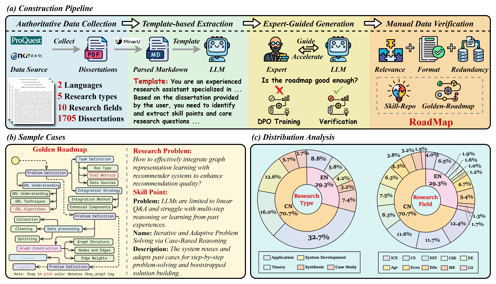
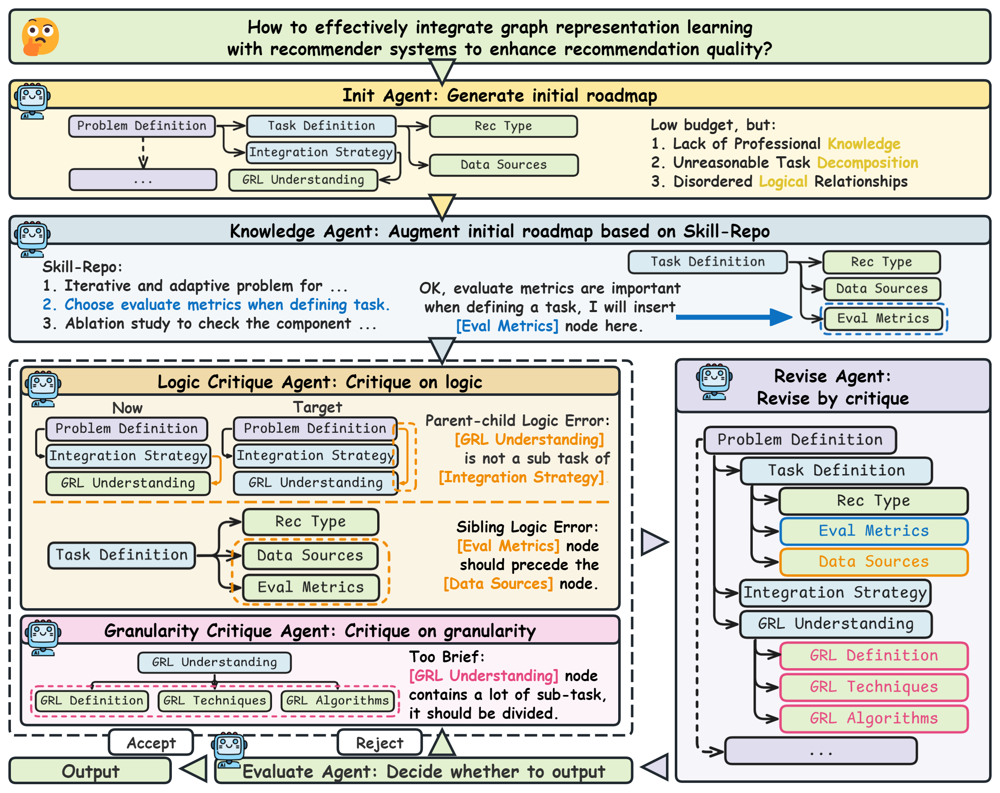

RoadMapper
A Multi-Agent System for Roadmap Generation of Solving Complex Research Problems
1Beijing University of Posts and Telecommunications
2The Hong Kong University of Science and Technology (Guangzhou)
3IDEA Research 4Hithink RoyalFlush Information Network Co., Ltd.
* Corresponding author
Abstract
People commonly leverage structured content to accelerate knowledge acquisition and research problem solving. Among these, roadmaps guide researchers through hierarchical subtasks to solve complex research problems step by step. Despite progress in structured content generation, the roadmap generation task has remained unexplored. To bridge this gap, we introduce RoadMap, a novel benchmark designed to evaluate the ability of large language models (LLMs) to construct high-quality roadmaps for solving complex research problems. Based on this, we identify three limitations of LLMs: (1) lack of professional knowledge, (2) unreasonable task decomposition, and (3) disordered logical relationships. To address these challenges, we propose RoadMapper, an LLM-based multi-agent system that decomposes the research roadmap generation task into three key stages (i.e., initial generation, knowledge augmentation, and iterative "critique-revise-evaluate"). Extensive experiments demonstrate that RoadMapper can improve LLMs' ability for roadmap generation, while enhancing average performance by more than 8% and saving 84% of the time required by human experts, highlighting its effectiveness and application potential.
Key Figures

